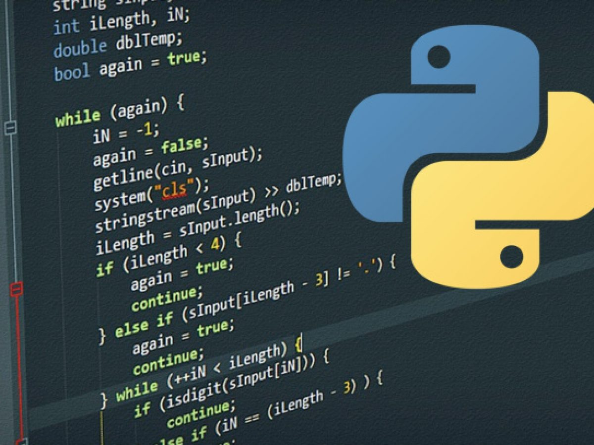
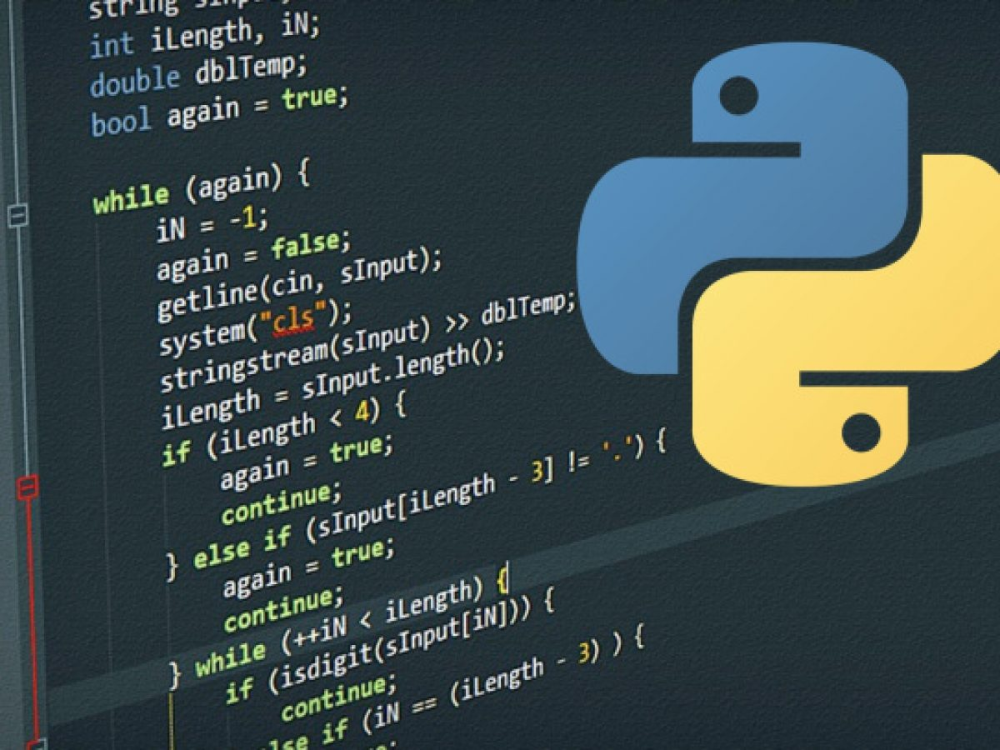
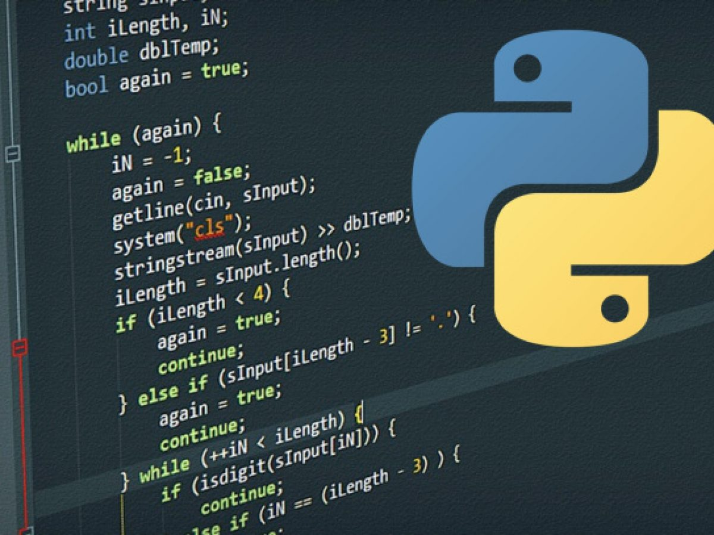

Python es un lenguaje de programación ampliamente utilizado en las aplicaciones web, el desarrollo de software, la ciencia de datos y el machine learning (ML). Los desarrolladores utilizan Python porque es eficiente y fácil de aprender, además de que se puede ejecutar en muchas plataformas diferentes.
* Los desarrolladores pueden leer y comprender fácilmente los programas de Python debido a su sintaxis básica similar a la del inglés.
* Python permite que los desarrolladores sean más productivos, ya que pueden escribir un programa de Python con menos líneas de código en comparación con muchos otros lenguajes.

Mi primer sitio Web, hecho con amor por Rayito en el bootcamp de tecnolochicas PRO